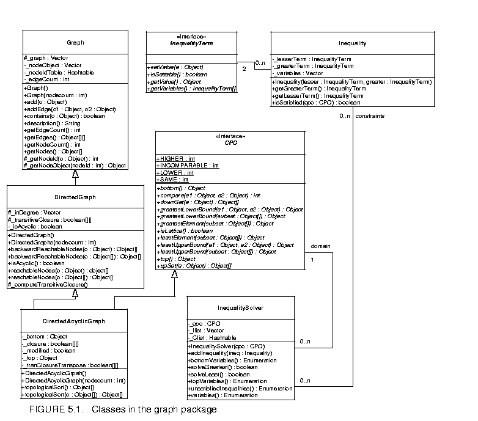
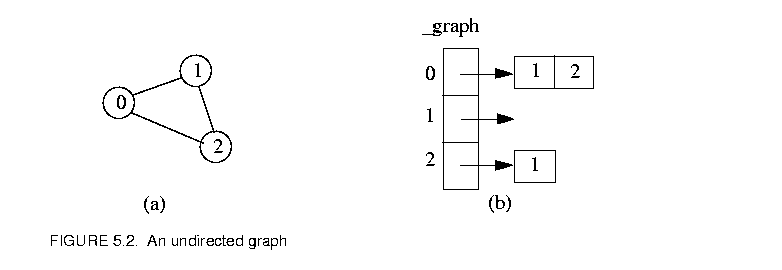
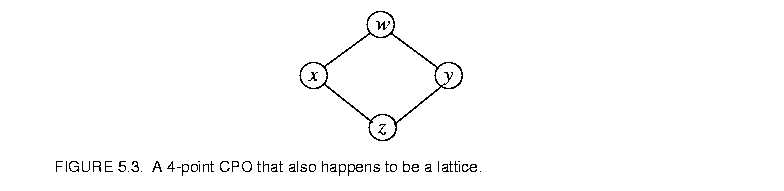

Page 7 out of 12 total pages
The Ptolemy II kernel provides extensive infrastructure for creating and manipulating clustered graphs of a particular flavor. Mathematical graphs, however, are simpler structures that consist of nodes and edges, without hierarchy. Edges link only two nodes, and therefore are much simpler than the relations of the Ptolemy II kernel. Moreover, in mathematical graphs, no distinction is made between multiple edges that may be adjacent to a node, so the ports of the Ptolemy II kernel are not needed. A large number of algorithms have been developed that operate on mathematical graphs, and many of these prove extremely useful in support of scheduling, type resolution, and other operations in Ptolemy II. Thus, we have created the graph package, which provides efficient data structures for mathematical graphs, and collects algorithms for operating on them. At this time, the collection of algorithms is nowhere near as complete as in some widely used packages, such as LEDA. But this package will serve as a repository for a growing suite of algorithms.
The graph package provides basic infrastructure for both undirected and directed graphs. Acyclic directed graphs, which can be used to model complete partial orders (CPOs) and lattices, are also supported with more specialized algorithms.
The graphs constructed using this package are lightweight, designed for fast implementation of complex algorithms more than for generality. This makes them maximally complementary to the clustered graphs of the Ptolemy II kernel, which emphasize generality. A typical use of this package is to construct a graph that represents the topology of a CompositeEntity, run a graph algorithm, and extract useful information from the result. For example, a graph might be constructed that represents data precedences, and a topological sort might be used to generate a schedule. In this kind of application, the heirarchy of the original clustered graph is flattened, so nodes in the graph represent only opaque entities.
The architecture of this package is somewhat different from LEDA, in part because of the existence of the complementary kernel package. Unlike LEDA, there are no dedicated classes representing nodes and edges in the graph. The nodes in this package are represented by arbitrary instances of the Java Object class, and the graph topology is stored in a structure similar to an adjacency list.
The facilities that currently exist in this package are those that we have had most immediate need for. Since the type system of Ptolemy II requires extensive operations on lattices and CPOs, support for these is better developed than for other types of graphs.
Figure 5.1 shows the class diagram of the graph package.

The classes Graph, DirectedGraph and DirectedAcyclicGraph support graph construction and provide graph algorithms. Currently, only topological sort and transitive closure are implemented; other algorithms will be added as needed. The CPO interface defines the basic CPO operations, and the class DirectedAcyclicGraph implements this interface. An instance of DirectedAcyclicGraph is also a finite CPO where all the elements and order relations are explicitly specified. Defining the CPO operations in an interface allows future expansion to support infinite CPOs and finite CPOs where the elements are not explicitly enumerated. The InequalityTerm interface and the Inequality class model inequality constraints over the CPO. The details of the constraints will be discussed later. The InequalitySolver class provides an algorithm to solve a set of constraints. This is used by the Ptolemy II type system, but other uses may arise.The implementation of the above classes is not synchronized. If multiple threads access a graph or a set of constraints concurrently, external synchronization will be needed.
This class models a simple undirected graph. Each node in the graph is represented by an arbitrary Java object. The method add() is used to add a node to the graph, and addEdge() is used to connect two nodes in the graph. The arguments of addEdge() are two Objects representing two nodes already added to the graph. To mirror a topology constructed in the kernel package, multiple edges between two nodes are allowed. Each node is assigned a node ID based on the order the nodes are added. The translation from the node ID to the node Object is done by the _getNodeObject() method, and the translation in the other direction is done by _getNodeId(). Both methods are protected. The node ID is only used by this class and the derived classes, it is not exposed in any of the public interfaces. The topology is stored in the Vector _graph. The indexes of this Vector correspond to node IDs. Each entry of _graph is also a Vector, in which a list of node IDs are stored. When an edge is added by calling addEdge() with the first argument having node ID i and the second having node ID j, an Integer containing j is added to the Vector at the i-th entry of _graph. For example, if the graph in figure 5.2

(a) is connected using the sequence of calls: addEdge(n0, n1); addEdge(n0, n2); addEdge(n2, n1), where n0, n1, n2 are Objects representing the nodes with IDs 0, 1, 2, respectively, then the data structure will be in the form of 5.2(b).Note that in this undirected graph, the data format is dependent on the order of the two arguments in the addEdge() calls. Since each edge is stored only once, this data structure is not exactly the same as the adjacency list for undirected graphs, but it is quite similar. This structure is designed to be used by subclasses that model directed graphs, as well as by this base class. If it appears awkward when adding algorithms for undirected graph, a new class that derives from Graph may be added in the future to model undirected graph exclusively, in which case, Graph will provide the basic support for both undirected and directed graphs.
The DirectedGraph class is derived from Graph. The addEdge() method in DirectedGraph adds a directed edge to the graph. In this package, the direction of the edge is said to go from a lower node to a higher node, as opposed to from source to sink, head to tail, etc. The terms lower and higher conforms with the convention of the graphical representation of CPOs and lattices (the Hasse diagram), so they can be consistently used on both directed graphs and CPOs.
The computation of transitive closure is implemented in this class. The transitive closure is internally stored as a 2-D boolean matrix, whose indexes correspond to node IDs. The entry (i, j) is true if and only if there exists a path from the node with ID i to the node with ID j. This matrix is not exposed at the public interface; instead, it is used by this class and its subclass to do other operations. Once the transitive closure matrix is computed, graph operations like reachableNodes can be easily accomplished.
The DirectedAcyclicGraph class further restricts DirectedGraph by not allowing cycles. For performance reasons, this requirement is not checked when edges are added to the graph, but is checked when any of the graph operations is invoked. An exception is thrown if the graph is found to be cyclic.
The CPO interface defines the common operations on CPOs. The mathematical definition of these operations can be found in [10]. Informal definitions are given in the class documentation. This interface is implemented by the class DirectedAcyclicGraph.
Since most of the CPO operations involve the comparison of two elements, and comparison can be done in constant time once the transitive closure is available, DirectedAcyclicGraph makes heavy use of the transitive closure. Also, since most of the operations on a CPO have a dual operation, such as least upper bound and greatest lower bound, least element and greatest element, etc., the code for the dual operations can be shared if the order relation on the CPO is reversed. This is done by transposing the transitive closure matrix.
The InequalityTerm interface and Inequality and InequalitySolver classes supports the construction of a set of inequality constraints over a CPO and the identification of a member of the CPO that satisfies the constraints. A constraint is an inequality defined over a CPO, which can involve constants, variables, and functions. As an example, the following is a set of constraints over the 4-point CPO in figure 5.3:

where  and
and  are variables, and denotes greatest lower bound. One solution to this set of constraints is = = x.
are variables, and denotes greatest lower bound. One solution to this set of constraints is = = x.
An inequality term is either a constant, a variable, or a function over a CPO. The InequalityTerm interface defines the operations on a term. If a term consists of a single variable, the value of the variable can be set to a specific element of the underlying CPO. The isSettable() method queries whether the value of a term can be set. It returns true if the term is a variable, and false if it is a constant or a function. The setValue() method is used to set the value for variable terms. The getValue() method returns the current value of the term, which is a constant if the term consists of a single constant, the current value of a variable if the term consists of a single variable, or the evaluation of a function based on the current value of the variables if the term is a function. The getVariables() method returns all the variables contained in a term. This method is used by the inequality solver.
The Inequality class contains two InequalityTerms, a lesser term and the greater term. The isSatisfied() method tests whether the inequality is satisfied over the specified CPO based on the current value of the variables. It returns true if the inequality is satisfied, and false otherwise.
The InequalitySolver class implements an algorithm to determine satisfiability of a set of inequality constraints and to find the solution to the constraints if they are satisfiable. This algorithm is described in [34]. It is basically an iterative procedure to update the value of variables until all the constraints are satisfied, or until conflicts among the constraints are found. Some limitations on the type of constraints apply for the algorithm to work. The method addInequality() adds an inequality to the set of constraints. Two methods solveLeast() and solveGreatest() can be used to solve the constraints. The former tries to find the least solution, while the latter attempts to find the greatest solution. If a solution is found, these methods return true and the current value of the variables is the solution. The method unsatisfiedInequalities() returns an enumeration of the inequalities that are not satisfied based on the current value of the variables. It can be used after solveLeast() or solveGreatest() return false to find out which inequalities cannot be satisfied after the algorithm runs. The bottomVariables() and topVariables() methods return enumerations of the variables whose current values are the bottom or the top element of the CPO.
The following is an example of using topological sort to generate a firing schedule for a CompositeActor of the actor package. The connectivity information among the Actors within the composite is translated into a directed acyclic graph, with each node of the graph represented by an Actor. The schedule is stored in an array, where each element of the array is a reference to an Actor.
Object[] generateSchedule(CompositeActor composite) {
DirectedAcyclicGraph g = new DirectedAcyclicGraph();
// add all the actors contained in the composite to the graph.
Enumeration allactors = composite.deepGetEntities();
while (allactors.hasMoreElements()) {
Actor actor = (Actor)allactors.nextElement();
g.add(actor);
}
// add all the connection in the composite as graph edges.
allactors = composite.deepGetEntities();
while (allactors.hasMoreElements()) {
Actor loweractor = (Actor)allactors.nextElement();
// find all the actors "higher" than the current one.
Enumeration alloutports = loweractor.outputPorts();
while (alloutports.hasMoreElements()) {
IOPort outport = (IOPort)alloutports.nextElement();
Enumeration allinports = outport.deepConnectedInPorts();
while (allinports.hasMoreElements()) {
IOPort inport = (IOPort)allinports.nextElement();
Actor higheractor = (Actor)inport.getContainer();
if (g.contains(higheractor)) {
g.addEdge(loweractor, higheractor);
}
}
}
}
return g.topologicalSort();
}
The code below uses two classes implementing the InequalityTerm interface. They model constant and variable terms, respectively. The values of these terms are Strings. Inequalities can be formed using these two classes.
// A constant InequalityTerm with a String Value.
class Constant implements InequalityTerm {
// construct a constant term with the specified String value.
public Constant(String value) {
_value = value;
}
// Return the constant String value of this term.
public Object getValue() {
return _value;
}
// Constant terms do not contain any variable, so return an array of size zero.
public InequalityTerm[] getVariables() {
return new InequalityTerm[0];
}
// Constant terms are not settable.
public boolean isSettable() {
return false;
}
// Throw an Exception on an attempt to change this constant.
public void setValue(Object e) throws IllegalActionException {
throw new IllegalActionException("Constant.setValue: This term is a constant.");
}
// the String value of this term.
private String _value = null;
}
// A variable InequalityTerm with a String value.
class Variable implements InequalityTerm {
// Construct a variable InequalityTerm with a null initial value.
public Variable() {
}
// Return the String value of this term.
public Object getValue() {
return _value;
}
// Return an array containing this variable term.
public InequalityTerm[] getVariables() {
InequalityTerm[] variable = new InequalityTerm[1];
variable[0] = this;
return variable;
}
// Variable terms are settable.
public boolean isSettable() {
return true;
}
// Set the value of this variable to the specified String.
// Not checking the type of the specified Object before casting for simplicity.
public void setValue(Object e) throws IllegalActionException {
_value = (String)e;
}
private String _value = null;
}
As a simple example, the following Java class constructs the 4-point CPO of figure 5.3, forms a set of constraints with three inequalities, and solves for both the least and greatest solutions. The inequalities are a  w; b a; b z, where w and z are constants in figure 2.3, and a and b are variables.
w; b a; b z, where w and z are constants in figure 2.3, and a and b are variables.
// An example of forming and solving inequality constraints.
public class TestSolver {
public static void main(String[] arv) {
// construct the 4-point CPO in figure 2.3.
CPO cpo = constructCPO();
// create inequality terms for constants w, z and
// variables a, b.
InequalityTerm tw = new Constant("w");
InequalityTerm tz = new Constant("z");
InequalityTerm ta = new Variable();
InequalityTerm tb = new Variable();
// form inequalities: a<=w; b<=a; b<=z.
Inequality iaw = new Inequality(ta, tw);
Inequality iba = new Inequality(tb, ta);
Inequality ibz = new Inequality(tb, tz);
// create the solver and add the inequalities.
InequalitySolver solver = new InequalitySolver(cpo);
solver.addInequality(iaw);
solver.addInequality(iba);
solver.addInequality(ibz);
// solve for the least solution
boolean satisfied = solver.solveLeast();
// The output should be:
// satisfied=true, least solution: a=z b=z
System.out.println("satisfied=" + satisfied + ", least solution:"
+ " a=" + ta.getValue() + " b=" + tb.getValue());
// solve for the greatest solution
satisfied = solver.solveGreatest();
// The output should be:
// satisfied=true, greatest solution: a=w b=z
System.out.println("satisfied=" + satisfied + ", greatest solution:"
+ " a=" + ta.getValue() + " b=" + tb.getValue());
}
public static CPO constructCPO() {
DirectedAcyclicGraph cpo = new DirectedAcyclicGraph();
cpo.add("w");
cpo.add("x");
cpo.add("y");
cpo.add("z");
cpo.addEdge("x", "w");
cpo.addEdge("y", "w");
cpo.addEdge("z", "x");
cpo.addEdge("z", "y");
return cpo;
}
}